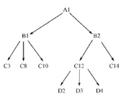

4.举出适合用文件系统而不是数据库系统的例子；再举出适合用数据库系统的应用例子。
7.试述数据模型的概念、数据模型的作用和数据模型的三个要素。
9.定义并解释概念模型中以下术语：实体，实体型，实体集，属性，码，实体联系图（ E 一 R 图）。
10.试给出 3 个实际部门的 E 一 R 图，要求实体型之间具有一对一、一对多、多对多各种不同的联系。
11.试给出一个实际部门的 E 一 R 图，要求有三个实体型，而且 3 个实体型之间有多对多联系。 3 个实体型之间的多对多联系和三个实体型两两之间的三个多对多联系等价吗？为什么？
15.今有一个层次数据库实例，试用子女一兄弟链接法和层次序列链接法画出它的存储结构示意图。

18.试述关系模型的概念，定义并解释以下术语： ( l ）关系（ 2 ）属性（ 3 ）域（ 4 ）元组 ( 5 ）主码（ 6 ）分量（ 7 ）关系模式。
21.定义并解释以下术语：模式、外模式、内模式、 DDL 、 DML
22.什么叫数据与程序的物理独立性？什么叫数据与程序的逻辑独立性？为什么数据库系统具有数据与程序的独立性？